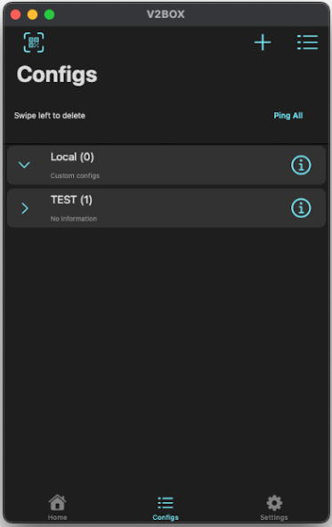
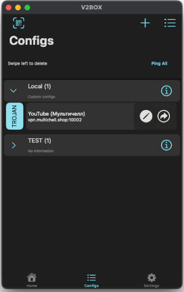

Инструкция для MacOS
Следуйте этим шагам, чтобы настроить VPN:
⛔️ Внимание! Требуется MacOS 14 или новее.
- Скопируйте ваш VPN-ключ из Telegram-бота.
 скачайте приложение
скачайте приложение
- Откройте приложение v2box.
Если оно не установлено — скачайте из App Store. - Нажмите на значок «+» в правом верхнем углу и выберите «Вставить ключ из буфера обмена». 
- После этого ключ появится в списке. Чтобы его активировать — просто нажмите на него. 
- Перейдите во вкладку Home и нажмите на кнопку подключения.
Если статус загорится зелёным — вы успешно подключены к VPN!